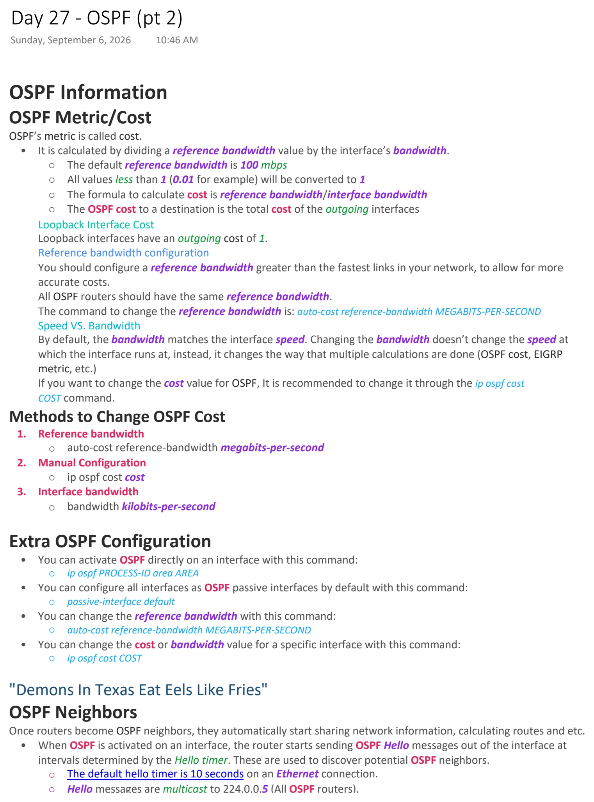
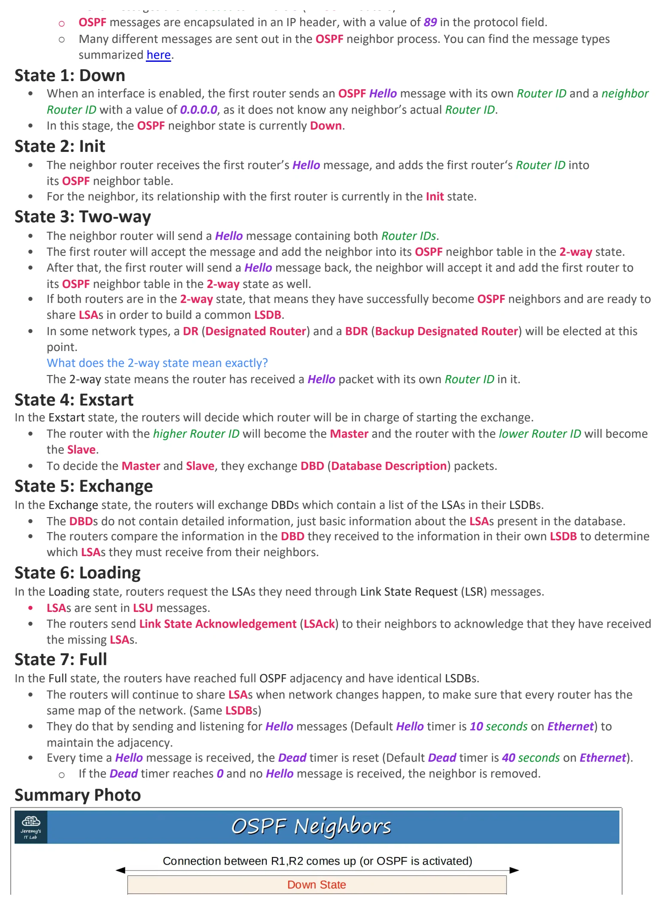
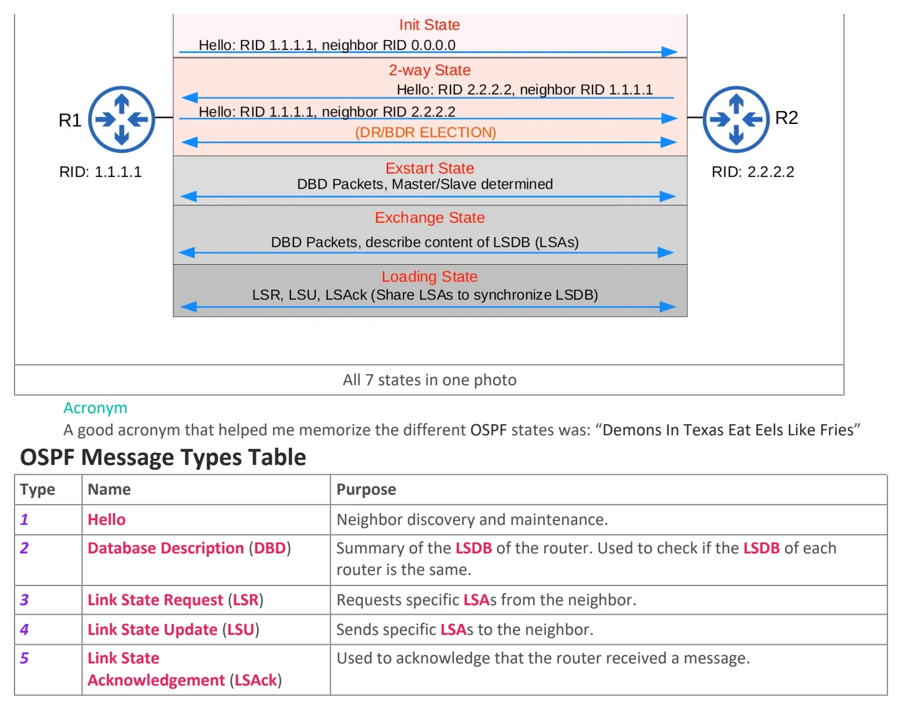

Day 27 / 63 · Routing & addressing
OSPF (pt 2)
Original notes and diagrams from my OneNote notebook.
OSPF (pt 2)
Download original PDF


Text view — OSPF (pt 2)
Extracted from the original export. Diagrams and some formatting appear in the notes above.
Day 27 - OSPF (pt 2) Sunday, September 6, 2026 10:46 AM OSPF Information OSPF Metric/Cost OSPF’s metric is called cost. • It is calculated by dividing a reference bandwidth value by the interface’s bandwidth. ○ The default reference bandwidth is 100 mbps ○ All values less than 1 (0.01 for example) will be converted to 1 ○ The formula to calculate cost is reference bandwidth/interface bandwidth ○ The OSPF cost to a destination is the total cost of the outgoing interfaces Loopback Interface Cost Loopback interfaces have an outgoing cost of 1. Reference bandwidth configuration You should configure a reference bandwidth greater than the fastest links in your network, to allow for more accurate costs. All OSPF routers should have the same reference bandwidth. The command to change the reference bandwidth is: auto-cost reference-bandwidth MEGABITS-PER-SECOND Speed VS. Bandwidth By default, the bandwidth matches the interface speed. Changing the bandwidth doesn’t change the speed at which the interface runs at, instead, it changes the way that multiple calculations are done (OSPF cost, EIGRP metric, etc.) If you want to change the cost value for OSPF, It is recommended to change it through the ip ospf cost COST command. Methods to Change OSPF Cost 1. Reference bandwidth ○ auto-cost reference-bandwidth megabits-per-second 2. Manual Configuration ○ ip ospf cost cost 3. Interface bandwidth ○ bandwidth kilobits-per-second Extra OSPF Configuration • You can activate OSPF directly on an interface with this command: ○ ip ospf PROCESS-ID area AREA • You can configure all interfaces as OSPF passive interfaces by default with this command: ○ passive-interface default • You can change the reference bandwidth with this command: ○ auto-cost reference-bandwidth MEGABITS-PER-SECOND • You can change the cost or bandwidth value for a specific interface with this command: ○ ip ospf cost COST "Demons In Texas Eat Eels Like Fries" OSPF Neighbors Once routers become OSPF neighbors, they automatically start sharing network information, calculating routes and etc. • When OSPF is activated on an interface, the router starts sending OSPF Hello messages out of the interface at intervals determined by the Hello timer. These are used to discover potential OSPF neighbors. ○ The default hello timer is 10 seconds on an Ethernet connection. ○ Hello messages are multicast to 224.0.0.5 (All OSPF routers). ○ OSPF messages are encapsulated in an IP header, with a value of 89 in the protocol field. ○ Many different messages are sent out in the OSPF neighbor process. You can find the message types summarized here. State 1: Down • When an interface is enabled, the first router sends an OSPF Hello message with its own Router ID and a neighbor Router ID with a value of 0.0.0.0, as it does not know any neighbor’s actual Router ID. • In this stage, the OSPF neighbor state is currently Down. State 2: Init • The neighbor router receives the first router’s Hello message, and adds the first router‘s Router ID into its OSPF neighbor table. • For the neighbor, its relationship with the first router is currently in the Init state. State 3: Two-way • The neighbor router will send a Hello message containing both Router IDs. • The first router will accept the message and add the neighbor into its OSPF neighbor table in the 2-way state. • After that, the first router will send a Hello message back, the neighbor will accept it and add the first router to its OSPF neighbor table in the 2-way state as well. • If both routers are in the 2-way state, that means they have successfully become OSPF neighbors and are ready to share LSAs in order to build a common LSDB. • In some network types, a DR (Designated Router) and a BDR (Backup Designated Router) will be elected at this point. What does the 2-way state mean exactly? The 2-way state means the router has received a Hello packet with its own Router ID in it. State 4: Exstart In the Exstart state, the routers will decide which router will be in charge of starting the exchange. • The router with the higher Router ID will become the Master and the router with the lower Router ID will become the Slave. • To decide the Master and Slave, they exchange DBD (Database Description) packets. State 5: Exchange In the Exchange state, the routers will exchange DBDs which contain a list of the LSAs in their LSDBs. • The DBDs do not contain detailed information, just basic information about the LSAs present in the database. • The routers compare the information in the DBD they received to the information in their own LSDB to determine which LSAs they must receive from their neighbors. State 6: Loading In the Loading state, routers request the LSAs they need through Link State Request (LSR) messages. • LSAs are sent in LSU messages. • The routers send Link State Acknowledgement (LSAck) to their neighbors to acknowledge that they have received the missing LSAs. State 7: Full In the Full state, the routers have reached full OSPF adjacency and have identical LSDBs. • The routers will continue to share LSAs when network changes happen, to make sure that every router has the same map of the network. (Same LSDBs) • They do that by sending and listening for Hello messages (Default Hello timer is 10 seconds on Ethernet) to maintain the adjacency. • Every time a Hello message is received, the Dead timer is reset (Default Dead timer is 40 seconds on Ethernet). ○ If the Dead timer reaches 0 and no Hello message is received, the neighbor is removed. Summary Photo All 7 states in one photo Acronym A good acronym that helped me memorize the different OSPF states was: “Demons In Texas Eat Eels Like Fries” OSPF Message Types Table Type Name Purpose 1 Hello Neighbor discovery and maintenance. 2 Database Description (DBD) Summary of the LSDB of the router. Used to check if the LSDB of each router is the same. 3 Link State Request (LSR) Requests specific LSAs from the neighbor. 4 Link State Update (LSU) Sends specific LSAs to the neighbor. 5 Link State Used to acknowledge that the router received a message. Acknowledgement (LSAck) Day 27 - OSPF (pt 2) Sunday, September 6, 2026 10:46 AM OSPF Information OSPF Metric/Cost OSPF’s metric is called cost. • It is calculated by dividing a reference bandwidth value by the interface’s bandwidth. ○ The default reference bandwidth is 100 mbps ○ All values less than 1 (0.01 for example) will be converted to 1 ○ The formula to calculate cost is reference bandwidth/interface bandwidth ○ The OSPF cost to a destination is the total cost of the outgoing interfaces Loopback Interface Cost Loopback interfaces have an outgoing cost of 1. Reference bandwidth configuration You should configure a reference bandwidth greater than the fastest links in your network, to allow for more accurate costs. All OSPF routers should have the same reference bandwidth. The command to change the reference bandwidth is: auto-cost reference-bandwidth MEGABITS-PER-SECOND Speed VS. Bandwidth By default, the bandwidth matches the interface speed. Changing the bandwidth doesn’t change the speed at which the interface runs at, instead, it changes the way that multiple calculations are done (OSPF cost, EIGRP metric, etc.) If you want to change the cost value for OSPF, It is recommended to change it through the ip ospf cost COST command. Methods to Change OSPF Cost 1. Reference bandwidth ○ auto-cost reference-bandwidth megabits-per-second 2. Manual Configuration ○ ip ospf cost cost 3. Interface bandwidth ○ bandwidth kilobits-per-second Extra OSPF Configuration • You can activate OSPF directly on an interface with this command: ○ ip ospf PROCESS-ID area AREA • You can configure all interfaces as OSPF passive interfaces by default with this command: ○ passive-interface default • You can change the reference bandwidth with this command: ○ auto-cost reference-bandwidth MEGABITS-PER-SECOND • You can change the cost or bandwidth value for a specific interface with this command: ○ ip ospf cost COST "Demons In Texas Eat Eels Like Fries" OSPF Neighbors Once routers become OSPF neighbors, they automatically start sharing network information, calculating routes and etc. • When OSPF is activated on an interface, the router starts sending OSPF Hello messages out of the interface at intervals determined by the Hello timer. These are used to discover potential OSPF neighbors. ○ The default hello timer is 10 seconds on an Ethernet connection. ○ Hello messages are multicast to 224.0.0.5 (All OSPF routers). ○ OSPF messages are encapsulated in an IP header, with a value of 89 in the protocol field. ○ Many different messages are sent out in the OSPF neighbor process. You can find the message types summarized here. State 1: Down • When an interface is enabled, the first router sends an OSPF Hello message with its own Router ID and a neighbor Router ID with a value of 0.0.0.0, as it does not know any neighbor’s actual Router ID. • In this stage, the OSPF neighbor state is currently Down. State 2: Init • The neighbor router receives the first router’s Hello message, and adds the first router‘s Router ID into its OSPF neighbor table. • For the neighbor, its relationship with the first router is currently in the Init state. State 3: Two-way • The neighbor router will send a Hello message containing both Router IDs. • The first router will accept the message and add the neighbor into its OSPF neighbor table in the 2-way state. • After that, the first router will send a Hello message back, the neighbor will accept it and add the first router to its OSPF neighbor table in the 2-way state as well. • If both routers are in the 2-way state, that means they have successfully become OSPF neighbors and are ready to share LSAs in order to build a common LSDB. • In some network types, a DR (Designated Router) and a BDR (Backup Designated Router) will be elected at this point. What does the 2-way state mean exactly? The 2-way state means the router has received a Hello packet with its own Router ID in it. State 4: Exstart In the Exstart state, the routers will decide which router will be in charge of starting the exchange. • The router with the higher Router ID will become the Master and the router with the lower Router ID will become the Slave. • To decide the Master and Slave, they exchange DBD (Database Description) packets. State 5: Exchange In the Exchange state, the routers will exchange DBDs which contain a list of the LSAs in their LSDBs. • The DBDs do not contain detailed information, just basic information about the LSAs present in the database. • The routers compare the information in the DBD they received to the information in their own LSDB to determine which LSAs they must receive from their neighbors. State 6: Loading In the Loading state, routers request the LSAs they need through Link State Request (LSR) messages. • LSAs are sent in LSU messages. • The routers send Link State Acknowledgement (LSAck) to their neighbors to acknowledge that they have received the missing LSAs. State 7: Full In the Full state, the routers have reached full OSPF adjacency and have identical LSDBs. • The routers will continue to share LSAs when network changes happen, to make sure that every router has the same map of the network. (Same LSDBs) • They do that by sending and listening for Hello messages (Default Hello timer is 10 seconds on Ethernet) to maintain the adjacency. • Every time a Hello message is received, the Dead timer is reset (Default Dead timer is 40 seconds on Ethernet). ○ If the Dead timer reaches 0 and no Hello message is received, the neighbor is removed. Summary Photo All 7 states in one photo Acronym A good acronym that helped me memorize the different OSPF states was: “Demons In Texas Eat Eels Like Fries” OSPF Message Types Table Type Name Purpose 1 Hello Neighbor discovery and maintenance. 2 Database Description (DBD) Summary of the LSDB of the router. Used to check if the LSDB of each router is the same. 3 Link State Request (LSR) Requests specific LSAs from the neighbor. 4 Link State Update (LSU) Sends specific LSAs to the neighbor. 5 Link State Used to acknowledge that the router received a message. Acknowledgement (LSAck) Day 27 - OSPF (pt 2) Sunday, September 6, 2026 10:46 AM OSPF Information OSPF Metric/Cost OSPF’s metric is called cost. • It is calculated by dividing a reference bandwidth value by the interface’s bandwidth. ○ The default reference bandwidth is 100 mbps ○ All values less than 1 (0.01 for example) will be converted to 1 ○ The formula to calculate cost is reference bandwidth/interface bandwidth ○ The OSPF cost to a destination is the total cost of the outgoing interfaces Loopback Interface Cost Loopback interfaces have an outgoing cost of 1. Reference bandwidth configuration You should configure a reference bandwidth greater than the fastest links in your network, to allow for more accurate costs. All OSPF routers should have the same reference bandwidth. The command to change the reference bandwidth is: auto-cost reference-bandwidth MEGABITS-PER-SECOND Speed VS. Bandwidth By default, the bandwidth matches the interface speed. Changing the bandwidth doesn’t change the speed at which the interface runs at, instead, it changes the way that multiple calculations are done (OSPF cost, EIGRP metric, etc.) If you want to change the cost value for OSPF, It is recommended to change it through the ip ospf cost COST command. Methods to Change OSPF Cost 1. Reference bandwidth ○ auto-cost reference-bandwidth megabits-per-second 2. Manual Configuration ○ ip ospf cost cost 3. Interface bandwidth ○ bandwidth kilobits-per-second Extra OSPF Configuration • You can activate OSPF directly on an interface with this command: ○ ip ospf PROCESS-ID area AREA • You can configure all interfaces as OSPF passive interfaces by default with this command: ○ passive-interface default • You can change the reference bandwidth with this command: ○ auto-cost reference-bandwidth MEGABITS-PER-SECOND • You can change the cost or bandwidth value for a specific interface with this command: ○ ip ospf cost COST "Demons In Texas Eat Eels Like Fries" OSPF Neighbors Once routers become OSPF neighbors, they automatically start sharing network information, calculating routes and etc. • When OSPF is activated on an interface, the router starts sending OSPF Hello messages out of the interface at intervals determined by the Hello timer. These are used to discover potential OSPF neighbors. ○ The default hello timer is 10 seconds on an Ethernet connection. ○ Hello messages are multicast to 224.0.0.5 (All OSPF routers). ○ OSPF messages are encapsulated in an IP header, with a value of 89 in the protocol field. ○ Many different messages are sent out in the OSPF neighbor process. You can find the message types summarized here. State 1: Down • When an interface is enabled, the first router sends an OSPF Hello message with its own Router ID and a neighbor Router ID with a value of 0.0.0.0, as it does not know any neighbor’s actual Router ID. • In this stage, the OSPF neighbor state is currently Down. State 2: Init • The neighbor router receives the first router’s Hello message, and adds the first router‘s Router ID into its OSPF neighbor table. • For the neighbor, its relationship with the first router is currently in the Init state. State 3: Two-way • The neighbor router will send a Hello message containing both Router IDs. • The first router will accept the message and add the neighbor into its OSPF neighbor table in the 2-way state. • After that, the first router will send a Hello message back, the neighbor will accept it and add the first router to its OSPF neighbor table in the 2-way state as well. • If both routers are in the 2-way state, that means they have successfully become OSPF neighbors and are ready to share LSAs in order to build a common LSDB. • In some network types, a DR (Designated Router) and a BDR (Backup Designated Router) will be elected at this point. What does the 2-way state mean exactly? The 2-way state means the router has received a Hello packet with its own Router ID in it. State 4: Exstart In the Exstart state, the routers will decide which router will be in charge of starting the exchange. • The router with the higher Router ID will become the Master and the router with the lower Router ID will become the Slave. • To decide the Master and Slave, they exchange DBD (Database Description) packets. State 5: Exchange In the Exchange state, the routers will exchange DBDs which contain a list of the LSAs in their LSDBs. • The DBDs do not contain detailed information, just basic information about the LSAs present in the database. • The routers compare the information in the DBD they received to the information in their own LSDB to determine which LSAs they must receive from their neighbors. State 6: Loading In the Loading state, routers request the LSAs they need through Link State Request (LSR) messages. • LSAs are sent in LSU messages. • The routers send Link State Acknowledgement (LSAck) to their neighbors to acknowledge that they have received the missing LSAs. State 7: Full In the Full state, the routers have reached full OSPF adjacency and have identical LSDBs. • The routers will continue to share LSAs when network changes happen, to make sure that every router has the same map of the network. (Same LSDBs) • They do that by sending and listening for Hello messages (Default Hello timer is 10 seconds on Ethernet) to maintain the adjacency. • Every time a Hello message is received, the Dead timer is reset (Default Dead timer is 40 seconds on Ethernet). ○ If the Dead timer reaches 0 and no Hello message is received, the neighbor is removed. Summary Photo All 7 states in one photo Acronym A good acronym that helped me memorize the different OSPF states was: “Demons In Texas Eat Eels Like Fries” OSPF Message Types Table Type Name Purpose 1 Hello Neighbor discovery and maintenance. 2 Database Description (DBD) Summary of the LSDB of the router. Used to check if the LSDB of each router is the same. 3 Link State Request (LSR) Requests specific LSAs from the neighbor. 4 Link State Update (LSU) Sends specific LSAs to the neighbor. 5 Link State Used to acknowledge that the router received a message. Acknowledgement (LSAck)